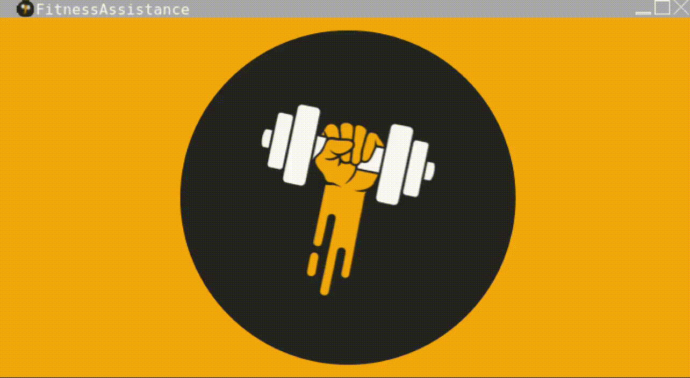
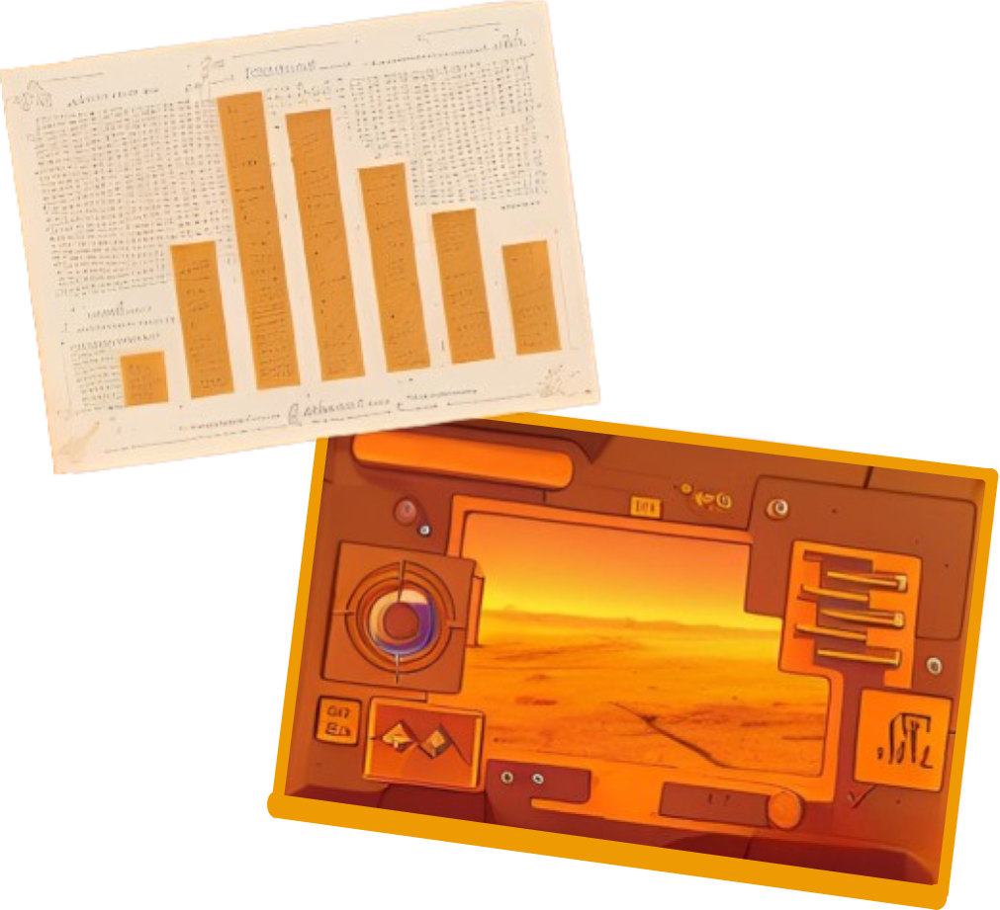

Welcome to FitnessAssistance
FitnessAssistance is your dedicated fitness tracking app, designed to help you kickstart and maintain a healthier lifestyle. Crafted with precision using Java and Java Swing, this desktop application simplifies your fitness journey with its intuitive interface and encouraging messages.
Download
Click the button below to download FitnessAssistance and follow the instructions on the screen.
Download FitnessAssistanceFeatures
- Activity Tracking:
- Input the number of steps taken and distance covered in kilometers.
- Calculate estimated calories burned during your activity.
- Monitor your fitness progress over time.
- Dynamic Feedback:
- Receive motivating messages tailored to your performance.
- Stay encouraged and motivated throughout your fitness journey.
- Get instant feedback to help you reach your goals.
- User-Friendly Interface:
- Utilizes Java Swing for a modern and visually appealing design.
- Intuitive layout for effortless interaction.
- Easy-to-read interface ensures a seamless user experience.
- Robust Performance:
- Developed using Java and Java Swing, guaranteeing reliable performance.
- Optimized for speed and responsiveness in your fitness tracking.

